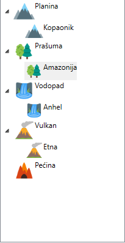

Uvod i osnovne informacije aplikaciji
Tipovi spomenika
Etikete
Spomenici
Mapa
U aplikacije je omogućen rad sa spomenicima odnosno njihovo pozicioniranje na mapu sveta. Svi dodati tipovi spomenika se nalaze u stablu sa leve strane glavnog prozora aplikacije, a centralni deo aplikacije zauzima mapa. Kada se doda novi spomenik on automatski biva dodat u stablo pod svojim tipom.
Da bi se spomenik premestio na mapu potrebno je kliknuti levim klikom na željeni spomenik u stablu i ne puštajući miša prevući ga na željenu poziciju na mapi. Sa mape je omogućeno premeštanje spomenika na drugo mestona isti način kao i prilikom postavljanja na mapu. Pritiskom levog klika na spomenik na mapi u donjem levom uglu prozora aplikacija bivaju prikazane osnovne informacije o njemu, a pritiskom na desni klik omogućeno je njegovo brisanje. Spomenici na mapi se ne mogu preklapati i ne mogu postojati 2 ista spomenika u isto vreme na mapi odnosno ako se pokuša dodavanje spomenika koji je već na mapi pređašnji će biti izbrisan.